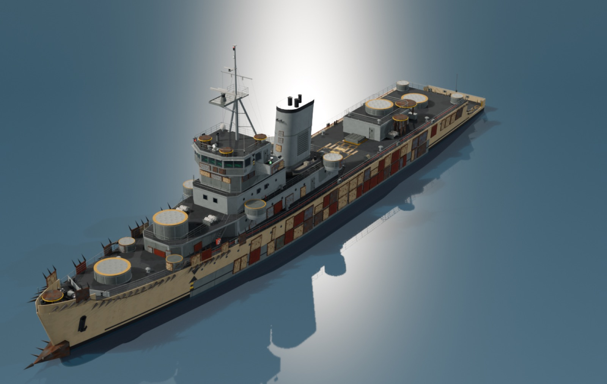

Runners · Pirate ships
Driftmark Frigate
Runners is in development. Details will change.
In review
A Frigate of The Driftmark, refitted the pirate way: 4-inch steel plate bolted over her sides, spikes, a welded ram, extra guns on welded mounts, and the faction's colours and mark.


Her sheet
- Faction
- The Driftmark
- Place in the fleet
- Capital
- Built on
- Frigate (S-15)